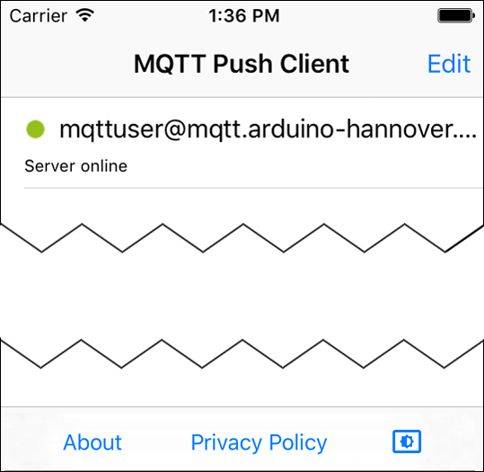

Wenn die App zum ersten Mal gestartet wird, werden Sie gefragt, ob die App Benachrichtigungen senden soll. Sie sollten dies mit Allow bestätigen:

Wenn die App zum ersten Mal gestartet wird, werden Sie gefragt, ob die App Benachrichtigungen senden soll. Sie sollten dies mit Allow bestätigen:
Der Standard-Port für den Push-Notification-Server ist 2033. Diese Angabe kann entfallen, wenn der Push-Server unter diesem Port erreichbar ist. Andernfalls muss der Port an den Domain-Namen angehängt werden, z. B. „yourpushserver.de:2009“.


In der Startansicht sollte jetzt Ihr Konto am MQTT-Server zu sehen sein:


Über ein Farbsymbol neben dem Servernamen lässt sich der Status der Verbindung bestimmen. Dieses Symbol kann drei verschiedene Farben annehmen:
| Alles OK. Push-Server und MQTT-Server sind erreichbar und online. Benachrichtigungen sind aktiviert. | |
| Wie grün, aber Benachrichtigungen funktionieren möglicherweise nicht, da keine Verbindung zum Cloud-Messaging-Dienst möglich ist (beispielsweise wenn keine Verbindung zum Internet besteht). | |
| Der Push-Server oder der angegebene MQTT-Server sind nicht erreichbar oder die Autorisierung schlug fehl. Auch Benachrichtigungen funktionieren möglicherweise nicht. |
Viele Mobiltelefone unterstützen einen sogenannten Dark- bzw. Light-Modus. Standardmäßig nutzt diese App die Systemeinstellung des Mobiltelefons. Sie können diese Einstellung allerdings auch direkt in der App anpassen. Damit wird die Systemeinstellung des Mobiltelefons überschrieben.
Mehrere Anwender können ein identisches Konto verwenden. Beispielsweise können alle Mitglieder einer Familie oder Gruppe automatisch die identischen Einstellungen nutzen und gleichzeitig benachrichtigt werden.